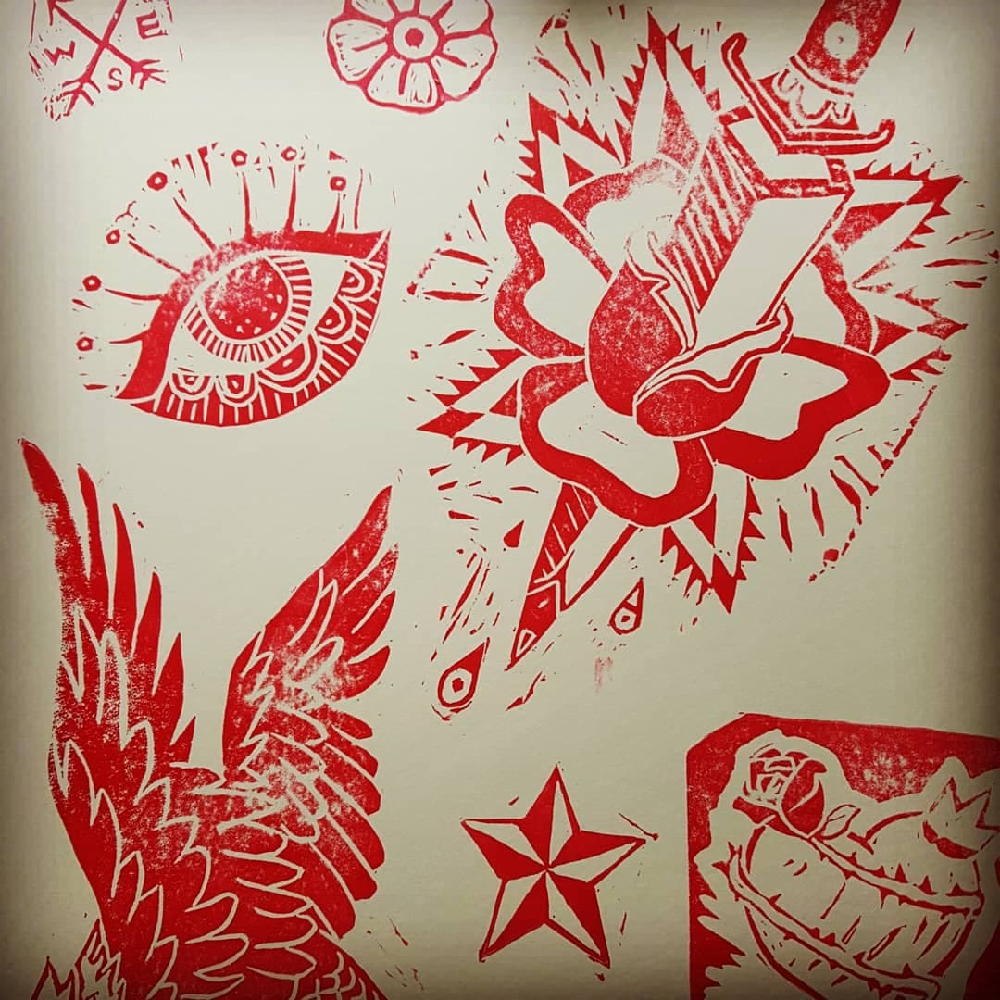

Artist's personal statement
From a young age I was encouraged to pursue visual art at a professional level and began formal training at the age of ten. I attended da Vinci arts middle school, where I received daily lessons in acrylic painting, drawing, ceramics, and textiles. My arts education continued into high school and community college, but sadly could not be continued in parrallel with my B.S. in Electrical Engineering. Since receiving my degree I have been working to rebuild my visual portfolio and I am excited to share my most recent work.
Printmaking

Charcoal

Pen

3D Media

Weaving